通过多 token 预测构建更好、更快的大语言模型
Fabian Gloeckle* 1 2，Badr Youbi Idrissi* 1 3，Baptiste Rozière1，David Lopez-Paz+ 1，Gabriel Synnaeve+ 1
摘要
GPT 和 Llama 等大语言模型采用下一 token 预测损失进行训练。本文提出，训练语言模型同时预测多个未来 token 能够提高样本效率。具体来说，在训练语料的每个位置，我们要求模型使用建立在共享模型主干之上的 \(n\) 个独立输出头，预测接下来的 \(n\) 个 token。将多 token 预测作为一项辅助训练任务，我们发现代码和自然语言模型的下游能力均有所提高，同时没有增加训练时间开销。模型规模越大，该方法就越有用；即使进行多个 epoch 的训练，它仍具有吸引力。在编程等生成式基准上，收益尤其显著：我们的模型始终比强基线高出几个百分点。与可比的下一 token 模型相比，我们的 13B 参数模型在 HumanEval 和 MBPP 上分别多解决了 12% 和 17% 的问题。在小型算法任务上的实验表明，多 token 预测有利于 induction heads 和算法推理能力的形成。另一个好处是，即使 batch 很大，采用 4-token 预测训练的模型，推理速度也最多可以提高到 3 倍。
1. 引言
人类将最具巧思的探索、令人惊讶的发现和美好的创造凝结为文字。通过实现一项简单而强大的无监督学习任务——下一 token 预测——在所有这些语料上训练的大语言模型（LLM）能够提取数量惊人的世界知识，以及基本的推理能力。尽管近来涌现出一系列令人瞩目的成果（OpenAI，2023），下一 token 预测仍然是一种低效的语言、世界知识和推理能力获取方式。更确切地说，采用下一 token 预测的 teacher forcing 会紧抓局部模式，忽略“困难”的决策。因此，一个事实依然存在：最先进的下一 token 预测器，要达到与人类儿童相同的流利程度，需要的数据量高出若干个数量级（Frank，2023）。
*同等贡献；+末位作者。1Meta FAIR；2École des Ponts ParisTech CERMICS；3Université Paris-Saclay LISN。通信作者：Fabian Gloeckle <fgloeckle@meta.com>，Badr Youbi Idrissi <byoubi@meta.com>。
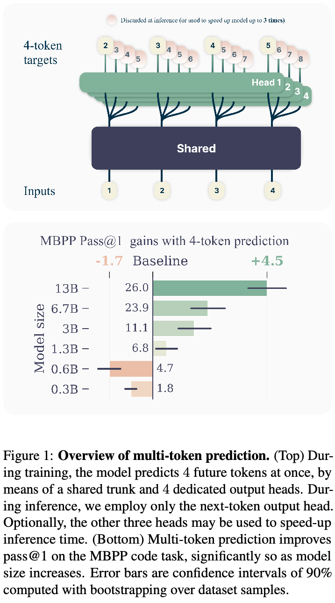
在本研究中，我们认为，训练 LLM 同时预测多个 token 将促使这些模型获得更高的样本效率。如图 1 所示，多 token 预测要求 LLM 从训练语料中的每个位置出发，同时并行预测未来的 \(n\) 个 token（Qi et al.，2020）。
贡献。尽管先前文献已经研究过多 token 预测（Qi et al.，2020），本文仍作出以下贡献：
- 提出一种简单的多 token 预测架构，不增加训练时间或内存开销（第 2 节）。
- 提供实验证据，表明这种训练范式在大规模下是有益的；参数量最高达 13B 的模型平均能够多解决约 15% 的编程问题（第 3 节）。
- 多 token 预测支持 self-speculative decoding，在广泛的 batch 大小下，使模型推理速度最高提升到 3 倍（第 3.2 节）。
多 token 预测虽然简单且无需额外成本，却是一项有效的改动，能够训练出更强、更快的 transformer 模型。我们希望这项工作能够激发人们对超越下一 token 预测的新型 LLM 辅助损失的兴趣，从而提升这些令人着迷的模型的性能、连贯性和推理能力。
2. 方法
标准语言建模通过执行下一 token 预测任务，学习大规模文本语料 \(x_1,\ldots,x_T\)。形式上，学习目标是最小化交叉熵损失：
\[L_1=-\sum_t\log P_\theta(x_{t+1}\mid x_{t:1}).\tag{1}\]其中，\(P_\theta\) 是正在训练的大语言模型；给定历史 token \(x_{t:1}=x_t,\ldots,x_1\)，该目标旨在最大化 \(x_{t+1}\) 作为紧接着的未来 token 的概率。
本文通过多 token 预测任务推广上述方法：在训练语料的每个位置，要求模型同时预测未来的 \(n\) 个 token。这对应于以下交叉熵损失：
\[L_n=-\sum_t\log P_\theta(x_{t+n:t+1}\mid x_{t:1}).\tag{2}\]为使计算可行，我们假定大语言模型 \(P_\theta\) 使用共享主干，生成已观测上下文 \(x_{t:1}\) 的潜在表示 \(z_{t:1}\)，随后将其输入 \(n\) 个独立的头，并行预测未来 \(n\) 个 token 中的每一个（见图 1）。由此，多 token 预测交叉熵损失可以分解为：
\[\begin{aligned}L_n&=-\sum_t\log P_\theta(x_{t+n:t+1}\mid z_{t:1})\cdot P_\theta(z_{t:1}\mid x_{t:1})\\&=-\sum_t\sum_{i=1}^n\log P_\theta(x_{t+i}\mid z_{t:1})\cdot P_\theta(z_{t:1}\mid x_{t:1}).\end{aligned}\]在实际实现中，架构包括：根据观测上下文 \(x_{t:1}\) 产生隐藏表示 \(z_{t:1}\) 的共享 transformer 主干 \(f_s\)，以 transformer 层 \(f_{h_i}\) 实现的 \(n\) 个独立输出头，以及共享的 unembedding 矩阵 \(f_u\)。因此，为预测未来 \(n\) 个 token，我们计算：
\[P_\theta(x_{t+i}\mid x_{t:1})=\operatorname{softmax}(f_u(f_{h_i}(f_s(x_{t:1})))),\]其中 \(i=1,\ldots,n\)；特别地，\(P_\theta(x_{t+1}\mid x_{t:1})\) 就是下一 token 预测头。其他多 token 预测架构变体见附录 B。
节省内存的实现。训练多 token 预测器的一项重大挑战是降低 GPU 内存占用。要理解其原因，请回忆：当前 LLM 的词表大小 \(V\) 远大于潜在表示的维度 \(d\)，因此 logit 向量成为 GPU 内存占用的瓶颈。若朴素地实现多 token 预测器，同时显式存储全部 logits 及其 gradient（两者形状均为 \((n,V)\)），就会严重限制允许的 batch 大小和平均 GPU 内存利用率。因此，我们提出在架构中精心调整前向与反向操作的执行顺序，如图 2 所示。具体而言，通过共享主干 \(f_s\) 完成前向传播后，我们依次为每个独立输出头 \(f_i\) 计算前向和反向传播，并在主干处累积 gradient。虽然这会为输出头 \(f_i\) 生成 logits 及其 gradient，但在继续处理下一个输出头 \(f_{i+1}\) 之前，它们就会被释放；需要长期保存的只有 \(d\) 维主干 gradient \(\partial L_n/\partial f_s\)。总之，我们把 GPU 峰值内存占用从 \(O(nV+d)\) 降低到了 \(O(V+d)\)，同时不增加运行时间（表 S5）。
推理。在推理时，所提架构最基本的使用方式是只保留下一 token 预测头 \(P_\theta(x_{t+1}\mid x_{t:1})\)，丢弃其他所有头，执行普通的下一 token 自回归预测。不过，也可以利用额外输出头，通过 self-speculative decoding 方法加速下一 token 预测头的 decoding，例如分块并行 decoding（Stern et al.，2018）——一种不需要额外草稿模型的 speculative decoding（Leviathan et al.，2023）变体——以及采用类似 Medusa 的 tree attention 的 speculative decoding（Cai et al.，2024）。
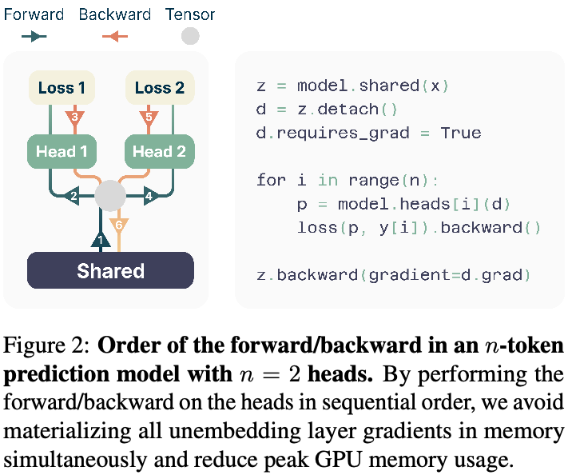
3. 真实数据实验
我们通过七项大规模实验展示多 token 预测损失的有效性。第 3.1 节展示，多 token 预测如何随着模型规模增长而变得更有用。第 3.2 节展示，额外的预测头如何利用 speculative decoding 将推理速度提升到 3 倍。第 3.3 节展示，多 token 预测如何促进对更长期模式的学习，这一点在按字节进行 tokenization 的极端情况下尤其明显。第 3.4 节展示，在使用大小为 32k 的 tokenizer 时，4-token 预测器能够带来显著收益。第 3.5 节说明，多 token 预测的收益在包含多个 epoch 的训练中仍然存在。第 3.6 节通过在 CodeContests 数据集（Li et al.，2022）上微调，展示采用多 token 预测损失预训练所促成的丰富表示。第 3.7 节展示，多 token 预测的收益也适用于自然语言模型，能够改善摘要等生成式评估，同时在基于多项选择题和负对数似然的标准基准上没有显著退步。
为公平比较下一 token 预测器与 \(n\)-token 预测器，下面的实验始终比较参数量相等的模型。也就是说，当我们在未来预测头中添加 \(n-1\) 层时，就从共享模型主干中移除 \(n-1\) 层。模型架构见表 S14，实验使用的超参数概览见表 S13。
3.1. 收益随模型规模增长
为研究这一现象，我们在至少 91B 个代码 token 上，从零训练参数量从 300M 到 13B 的六种规模的模型。图 3 中 MBPP（Austin et al.，2021）和 HumanEval（Chen et al.，2021）的评估结果表明：在完全相同的计算预算下，给定固定的数据集，采用多 token 预测能够从大语言模型中挖掘出高得多的性能。
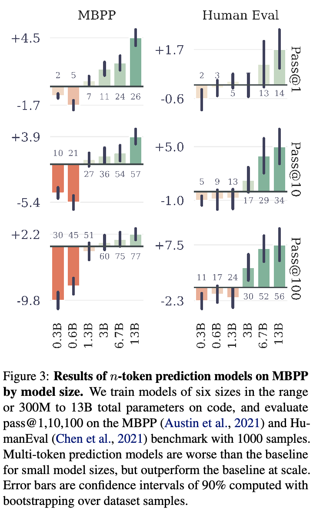
我们认为，这种“只在大规模下才有用”的特性，很可能是多 token 预测至今在很大程度上未被视为有前景的大语言模型训练损失的原因。
3.2. 更快的推理
我们使用 xFormers（Lefaudeux et al.，2022）实现支持异构 batch 大小的贪心 self-speculative decoding（Stern et al.，2018），并测量性能最好的 7B 参数 4-token 预测模型的 decoding 速度。任务是补全来自训练期间未见过的代码和自然语言测试数据集的提示（表 S2）。在代码上，我们观察到 3.0 倍加速，每 3 个建议 token 平均接受 2.5 个；而在（下页续）
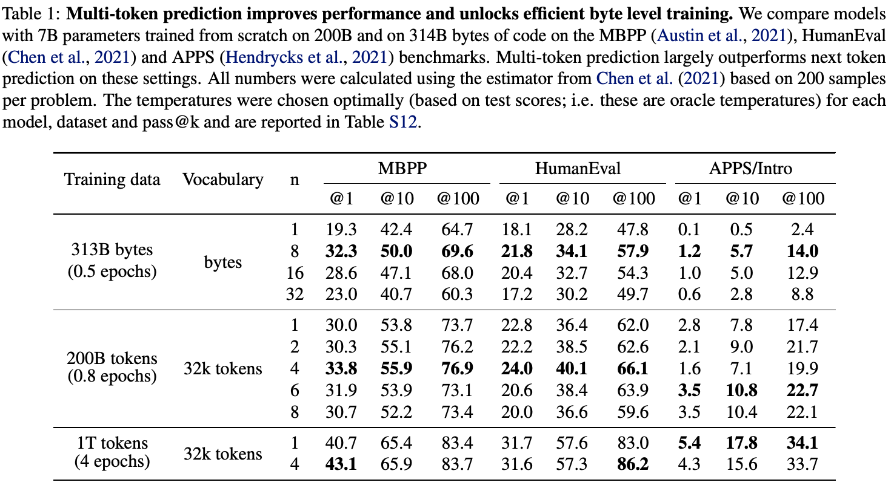
（接上页）文本上则观察到 2.7 倍加速。对于一个 8-byte 预测模型，推理加速为 6.4 倍（表 S3）。采用多 token 预测进行预训练，使额外预测头的准确率远高于仅对下一 token 预测模型进行简单微调的情况，因此我们的模型能够释放 self-speculative decoding 的全部潜力。
3.3. 通过多字节预测学习全局模式
为说明下一 token 预测任务会紧抓局部模式，我们采用按字节进行 tokenization 这一极端情况，在 314B 字节上训练了一个 7B 参数的字节级 transformer；这些数据大致相当于 116B 个 token。与下一字节预测相比，8-byte 预测模型取得了惊人的改进：按 pass@1 计算，在 MBPP 上多解决了 67% 的问题，在 HumanEval 上多解决了 20% 的问题。
因此，多字节预测是实现字节级模型高效训练的一条非常有前景的途径。对于 8-byte 预测模型，self-speculative decoding 能实现 6 倍加速，从而可以完全抵消推理时更长字节序列带来的成本，甚至比下一 token 预测模型快近两倍。8-byte 预测模型是一个强大的基于字节的模型：尽管训练所用的数据少了 1.7 倍，其性能已接近基于 token 的模型。
3.4. 寻找最优的 \(n\)
为更好地理解预测 token 数量的影响，我们对在 200B 个代码 token 上训练的 7B 规模模型进行了全面消融。在这一设置中，我们尝试了 \(n=1,2,4,6,8\)。表 1 的结果表明，在 HumanEval 和 MBPP 上，预测未来 4 个 token 的训练在 pass@1、pass@10 和 pass@100 指标上始终优于其他所有模型：MBPP 分别提高 +3.8%、+2.1% 和 +3.2%，HumanEval 分别提高 +1.2%、+3.7% 和 +4.1%。有趣的是，在 APPS/Intro 上，\(n=6\) 领先，提升分别为 +0.7%、+3.0% 和 +5.3%。最优窗口大小很可能取决于输入数据的分布。对于字节级模型，这些基准上的最优窗口大小则更为一致，均为 8 字节。
3.5. 训练多个 epoch
当在相同数据上训练多个 epoch 时，多 token 训练仍然保持着相对于下一 token 预测的优势。改进有所减小，但 MBPP 的 pass@1 仍提高了 +2.4%，HumanEval 的 pass@100 仍提高了 +3.2%，其他指标的性能则相近。对于 APPS/Intro，在使用 200B 个 token 训练时，窗口大小 4 就已经不是最优的。
3.6. 微调多 token 预测器
采用多 token 预测损失预训练的模型，在用于微调时也优于下一 token 模型。为评估这一点，我们将第 3.3 节的 7B 参数模型在（下页续）
（接上页）CodeContests 数据集（Li et al.，2022）上微调。我们比较 4-token 预测模型与下一 token 预测基线，并加入一种设置：移除 4-token 预测模型的额外预测头，使用经典的下一 token 预测目标进行微调。根据图 4，无论采用哪种方式微调 4-token 预测模型，在所有 \(k\) 值上的 pass@k 都优于下一 token 预测模型。这意味着，这些模型既更善于理解并解决任务，也更善于生成多样化答案。请注意，CodeContests 是本研究评估的最具挑战性的编程基准。在 4-token 预测预训练的基础上进行下一 token 预测微调，似乎是总体最好的方法，这与先采用辅助任务预训练、再针对具体任务微调的经典范式一致。详细信息见附录 F。
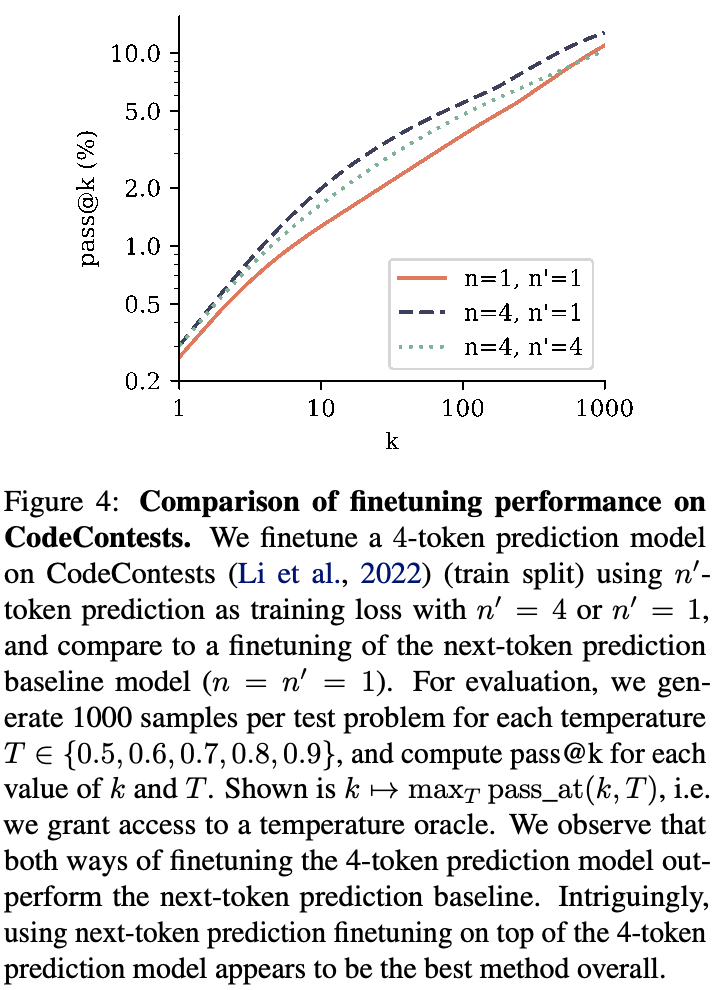
3.7. 自然语言上的多 token 预测
为评估自然语言上的多 token 预测训练，我们分别使用 4-token、2-token 和下一 token 预测损失，在 200B 个自然语言 token 上训练 7B 参数模型。图 5 在 6 个标准 NLP 基准上评估了训练得到的 checkpoint。在这些基准上，整个训练期间，未来 2-token 预测模型的表现与下一 token 预测基线相当。未来 4-token 预测模型出现了性能下降。详细数值见附录 G。
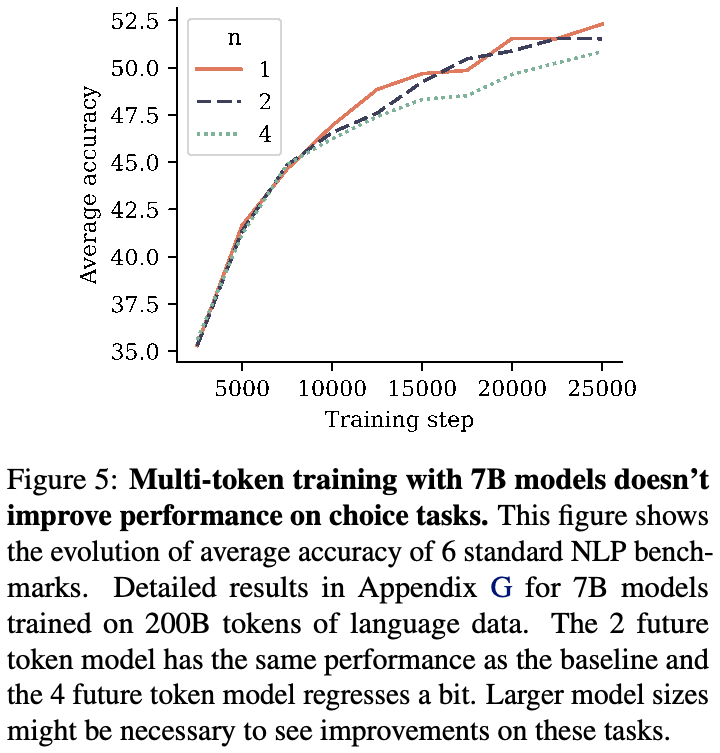
不过，我们认为，多项选择和基于似然的基准不适合有效地区分语言模型的生成能力。为了避免需要人工标注生成质量，或使用语言模型裁判——正如 Koo et al.（2023）指出的，后者也有自身的问题——我们在摘要和自然语言数学基准上进行评估，比较分别采用下一 token 和多 token 预测损失、训练集大小分别为 200B 和 500B 个 token 的预训练模型。
对于摘要，我们使用八个基准；相对于真实摘要计算的 ROUGE 指标（Lin，2004）能够自动评估生成文本。我们在每个基准的训练数据集上，将每个预训练模型微调三个 epoch，并选择验证数据集上 ROUGE-L F1 分数最高的 checkpoint。图 6 表明，对于两种训练集大小，\(n=2\) 和 \(n=4\) 的多 token 预测模型的 ROUGE-L F1 分数均优于下一 token 基线，而随着数据集增大，性能差距缩小。所有指标见附录 H。
对于自然语言数学，我们在 GSM8K 基准（Cobbe et al.，2021）上以 8-shot 模式评估预训练模型，并测量在少样本示例引出的 chain-of-thought 之后产生的最终答案的准确率。与代码评估类似，我们评估 pass@k 指标，以量化答案的多样性与正确性（下页续）
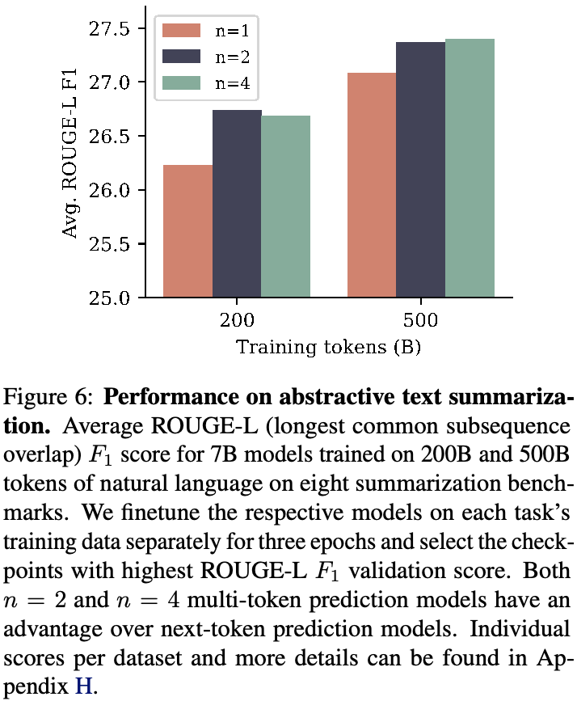
（接上页）并使用 0.2 到 1.4 之间的采样温度。结果见附录 I 的图 S13。使用 200B 个训练 token 时，\(n=2\) 的模型明显优于下一 token 预测基线；在 500B 个 token 之后，这一趋势逆转，而 \(n=4\) 始终更差。
4. 合成数据上的消融实验
在我们考察的所有任务上，究竟是什么推动了多 token 预测模型下游性能的提升？通过在可控训练数据集与评估任务上进行玩具实验，我们展示，多 token 预测会使模型能力和泛化行为发生质的变化。具体而言，第 4.1 节表明，对于小规模模型，Olsson et al.（2022）讨论的归纳能力，要么只有在使用多 token 预测作为训练损失时才会形成，要么会因它而得到大幅改善。此外，第 4.2 节表明，多 token 预测能够改善一个算术任务上的泛化，其效果甚至超过将模型规模扩大到三倍。
4.1. 归纳能力
归纳描述的是一种简单的推理模式：利用某个不完整模式最近一次出现时的后续内容，补全该模式（Olsson et al.，2022）。换句话说，如果一句话包含“AB”，后来再次提到“A”，归纳就是预测后续为“B”。我们设计了一个能够受控测量归纳能力的设置。我们在儿童故事数据集上训练非 embedding 参数量从 1M 到 1B 的小模型，并通过一个改编的测试集测量归纳能力：在原始测试划分的 100 个故事中，我们将人物姓名替换成随机生成的名字；在所用 tokenizer 下，每个名字都由两个 token 组成。预测这两个 token 中的第一个与前文语义有关，而在一个名字至少出现过一次后，再预测它每次出现时的第二个 token，则可视为纯粹的归纳任务。在实验中，我们最多训练 90 个 epoch，并依据测试指标提前停止（即允许使用 epoch oracle）。图 7 展示了使用不同随机种子的两次运行中，按名字第二个 token 的准确率测得的归纳能力与模型规模的关系。
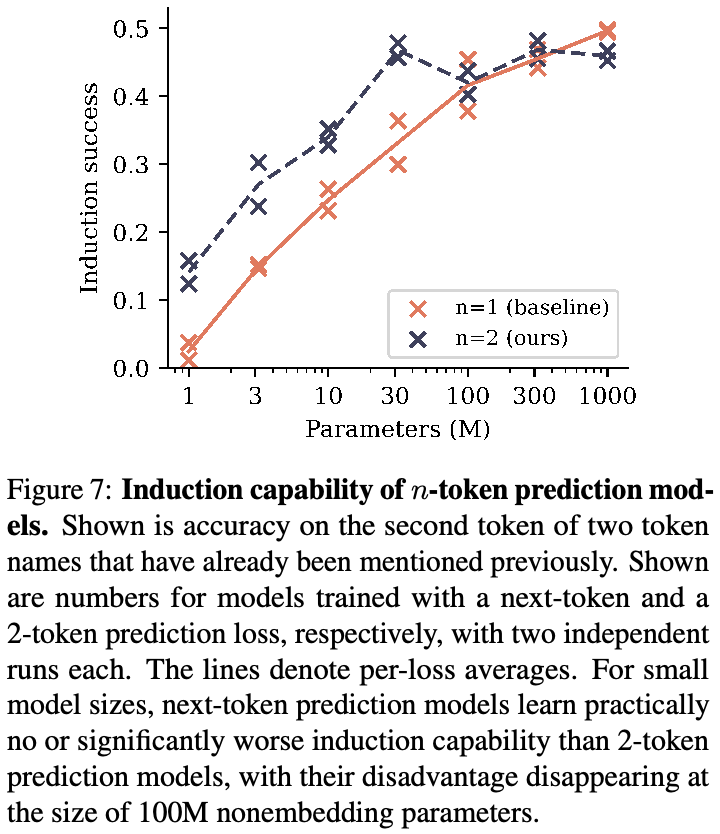
我们发现，对于非 embedding 参数量不超过 30M 的模型，2-token 预测损失会显著促进归纳能力的形成；在非 embedding 参数量达到 100M 及以上时，这一优势消失。1我们的解释如下：多 token 预测损失帮助模型学习在序列不同位置之间传递信息，这有利于 induction heads 和其他上下文学习机制的形成。不过，一旦归纳能力形成，这些学到的特征就会把归纳（下页续）
1请注意，这一基准无法达到满分，因为评估数据集名字中的部分 token 从未出现在训练数据中，而在我们的架构中，embedding 和 unembedding 参数并不绑定。
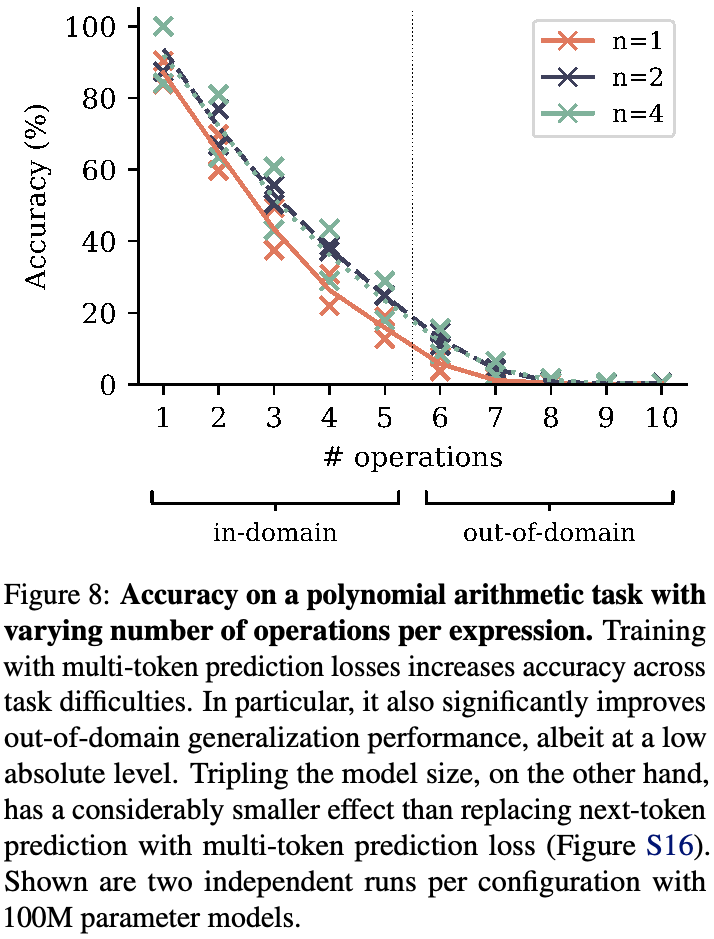
（接上页）转化为一个可在当前 token 处局部解决、仅凭下一 token 预测即可学会的任务。从这时起，在这个受限的基准上，多 token 预测实际上会产生负面影响。不过，我们推测还存在更高级的上下文推理形式，多 token 预测仍然有助于这些能力；第 3.1 节的结果支持这一点。在图 S14 中，我们提供了支持此解释的证据：将儿童故事数据集替换为书籍数据集与儿童故事按 9:1 混合而成、质量更高的数据集，仅凭数据本身就促使归纳能力在训练早期形成。结果是，除了最小的两种模型规模，多 token 预测在该任务上的优势消失了：对归纳特征的学习已经把该任务转化为纯粹的下一 token 预测任务。
4.2. 算法推理
与单纯的归纳相比，算法推理任务能够测量更复杂的上下文推理形式。我们在环 \(\mathbb{F}_7[X]/(X^5)\) 上的一个多项式算术任务中训练和评估模型，运算包括一元取负、多项式加法、乘法和复合。操作数的系数与运算符均采用均匀采样。任务是返回与结果表达式对应的多项式系数。训练时，表达式包含的运算次数 \(m\) 从 1 到 5 均匀选取；该数值还可用于调整域内（\(m\leq5\)）与域外（\(m>5\)）泛化评估的难度。评估采用贪心采样，在每种运算次数各含 2000 个样本的固定测试集上进行。我们训练了两种小规模模型，非 embedding 参数量分别为 30M 和 100M。这模拟了在海量文本语料上训练的大语言模型的情况：它们同样参数不足，无法记住整个训练数据集。
在不同任务难度下，多 token 预测都改善了此任务测得的算法推理能力（图 8）。特别是，尽管绝对数值较低，它仍在分布外泛化上带来了显著收益。相比之下，将模型参数量从 30M 提升至 100M，对评估准确率的改善不如用多 token 预测替代下一 token 预测（图 S16）。附录 K 进一步表明，在使用 pause tokens（Goyal et al.，2023）训练和评估这一任务时，多 token 预测模型仍保有相对于下一 token 预测模型的优势。
5. 为什么有效？一些推测
为什么多 token 预测能够在编程评估基准和小型算法推理任务上取得更优性能？本节阐述的直觉是，多 token 预测减轻了训练时 teacher forcing 与推理时自回归生成之间的分布差异。为支持这一观点，我们给出一个直观论证，说明多 token 预测如何根据 token 与后续文本的相关性赋予它们不同的隐式权重；我们也从信息论角度分解多 token 预测损失。
5.1. 前瞻强化选择点
对于语言模型生成有用文本，并非所有 token 决策都同等重要（Bachmann and Nagarajan，2024；Lin et al.，2024）。有些 token 允许风格变化，不会约束其余文本；另一些则代表选择点，与文本更高层次的语义属性相联系，可能决定一个回答被认为有用还是偏离方向。
多 token 预测会依据训练 token 与其后继 token 的相关程度，为其隐式赋权。作为直观示例，考虑图 9 所示序列，其中一个转移是难以预测的选择点，而其他转移被认为“无关紧要”。选择点之后那些无关紧要的转移，同样难以提前预测。通过标记并统计损失项，我们发现（下页续）
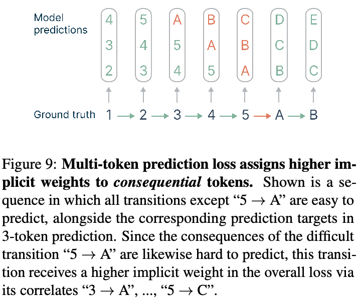
（接上页）\(n\)-token 预测通过选择点的相关项，赋予选择点 \(\frac{n(n+1)}2\) 的权重，而赋予无关紧要的点较小的权重 \(n\)。更多细节见附录 L.3。总体而言，我们认为，文本生成质量取决于能否在选择点上作出正确决策，而 \(n\)-token 预测损失能够促进这样的决策。
5.2. 信息论论证
语言模型通常采用 teacher forcing 训练，即模型在训练期间接收每个未来 token 的真实值。但是在测试时，生成没有引导，而且采用自回归方式，因此错误会不断累积。我们认为，teacher forcing 鼓励模型专注于把极短期预测做好，代价可能是忽视生成序列整体结构中的较长期依赖。
为说明多 token 预测的影响，考虑以下信息论论证。这里，\(X\) 表示紧接着的未来 token，\(Y\) 表示再下一个未来 token。这两个 token 的生成均以某个已观测的输入上下文 \(C\) 为条件，为简洁起见，我们在公式中省略它。当位于 token \(X\) 之前时，普通下一 token 预测关注的量是 \(H(X)\)，而 \(n=2\) 的多 token 预测针对的是 \(H(X)+H(Y)\)。我们将这两个量分解为：
\[H(X)=H(X\mid Y)+I(X;Y),\] \[H(X)+H(Y)=H(X\mid Y)+2I(X;Y)+H(Y\mid X).\]去掉 \(H(Y\mid X)\) 项——在下一个位置进行预测时，这一项还会再次出现——我们可以看到，2-token 预测使 \(I(X;Y)\) 的重要性增加到 2 倍。因此，多 token 预测器能够更准确地预测那些与后续其余文本相关的 token \(X\)。附录 L.2 给出了上述公式的相对版本，表明在 2-token 预测损失的分解中，相对互信息的权重增加了。
6. 相关工作
语言建模损失。Dong et al.（2019）和 Tay et al.（2022）混合使用具有不同 attention mask（全 attention、因果 attention 和前缀 attention）的去噪任务进行训练，以弥合与下一 token 预训练在生成任务上的性能差距。Tay et al.（2022）使用 span corruption 目标：在编码器端用特殊 token 替换若干 token 片段，再让 decoder 预测这些片段的内容。与 UniLM 不同，这允许使用 teacher forcing 进行完全因果的训练。类似地，Yang et al.（2019）在保留原始位置 embeddings 的情况下，使用重排后的序列训练，实际上使模型学习根据混合的过去与未来信息，预测序列的不同部分。这种重排语言建模与我们的任务最接近，因为它允许预测下一 token 之后的内容。然而，所有这些语言建模任务只在输入文本的一小部分上训练：平均只有 15% 的 token 参与反向传播。对于 Dong et al.（2019），其 mask 采用 BERT 风格，很难遮蔽超过 15% 的 token，因为这会破坏过多信息。对于 Tay et al.（2022），技术上可以采用更高比例，但实际使用的设置中，遮蔽 token 的比例为 15% 到 25%。Yang et al.（2019）也可以在整个序列上训练，因为它只是重排序列，没有信息损失。然而实际中，由于完全随机的排列很难重建，出于训练稳定性的考虑，只预测 15% 的 token。
语言建模中的多 token 预测。Qi et al.（2020）认为，多 token 预测鼓励规划、改善表示，并防止 teacher forcing 训练可能导致的局部模式过拟合。不过，他们的技术方案会将 residual stream 复制 \(n\) 份；我们的方案则允许在计算量匹配的条件下比较，并使残差表示更直接地参与辅助损失项。Stern et al.（2018）和 Cai et al.（2024）提出通过多 token 预测微调模型，以加快推理，但没有研究这种损失在预训练中的影响。Pal et al.（2023）使用探测方法表明，下一 token 预测模型在一定程度上能够预测额外的连续 token，但不如我们专门针对这一任务训练的模型。Jianyu Zhang（2024）将词表中各词是否会在未来出现的多标签二分类作为辅助学习任务，观察到语言建模任务上的改进。
Self-speculative decoding。据我们所知，Stern et al.（2018）最早提出用于加速推理的 speculative decoding 方案。我们的架构将其中的线性预测头替换为 transformer 层，其他方面则相似。通过重排前向和反向传播的顺序，我们可以使用所有损失项，而无需随机选择一个头来计算损失。Cai et al.（2024）提出了更精细的 self-speculative decoding 方案，使用每个头的 Top-k 预测，而不只是最优预测。该方案可以用于我们训练的多 token 预测模型。
多目标预测。多任务学习是指联合使用多个任务训练神经网络，以改善目标任务的性能（Caruana，1997）。借助此类辅助任务学习，模型能够利用目标变量之间的依赖关系；即便目标彼此独立，这样做也可能更好（Waegeman et al.，2019）。虽然可以构想出更专门为多目标预测设计的架构（Spyromitros-Xioufis et al.，2016；Read et al.，2021），现代深度学习方法通常与我们一样，依赖大型共享模型主干，并为各个任务配备独立预测头（Caruana，1997；Silver et al.，2016；Lample et al.，2022）。多目标预测已被证明在多个领域是一种成功的策略，例如将更远未来时间步作为辅助目标的时间序列预测学习（Vapnik and Vashist，2009），以及将多个未来视频帧（Mathieu et al.，2016；Srivastava et al.，2016）或未来帧的表示（Vondrick et al.，2016）作为辅助目标的视频学习。
7. 结论
我们提出，在为生成或推理任务训练语言模型时，多 token 预测是对下一 token 预测的改进。我们的实验（最高达 7B 参数、1T 个 token）表明，模型越大，这一方法越有用，尤其是在代码任务上取得显著改善。我们认为，此方法减轻了 teacher forcing 训练与自回归生成之间的分布不匹配。与 speculative decoding 结合使用时，精确推理速度可提高到 3 倍。
未来，我们希望更好地理解如何自动选择多 token 预测损失中的 \(n\)。一种可能的方法是使用损失缩放与损失平衡（Défossez et al.，2022）。此外，多 token 预测的最优词表大小很可能与下一 token 预测不同；调整词表大小或许能够得到更好的结果，并改善压缩后的序列长度与每字节计算成本之间的权衡。最后，我们希望开发作用于 embedding 空间的更优辅助预测损失（LeCun，2022）。
影响声明
本文旨在提高语言模型的计算和数据效率。尽管原则上这可能降低 LLM 训练对生态的影响，我们仍应警惕反弹效应。在使用本项工作时，应考虑 LLM 带来的所有社会益处与风险。
环境影响
总体而言，训练本文报告的全部模型，在 A100-80GB 和 H100 硬件上共消耗了约 500K GPU 小时的计算。估算总排放量约为 50 tCO₂eq，其中 100% 已由 Meta 的可持续发展计划抵消。
致谢
感谢 Jianyu Zhang、Léon Bottou、Emmanuel Dupoux、Pierre-Emmanuel Mazaré、Yann LeCun、Quentin Garrido、Megi Dervishi、Mathurin Videau、Timothée Darcet，以及其他 FAIR 博士生和 CodeGen 团队成员所提供的有益讨论。感谢 Jonas Gehring 的技术专长，以及最初的 Llama 团队和 xFormers 团队，使此类研究成为可能。
参考文献
Jacob Austin, Augustus Odena, Maxwell Nye, Maarten Bosma, Henryk Michalewski, David Dohan, Ellen Jiang, Carrie Cai, Michael Terry, Quoc Le, et al. 使用大语言模型进行程序合成。 arXiv preprint arXiv:2108.07732, 2021.
Gregor Bachmann and Vaishnavh Nagarajan. 下一 token 预测的陷阱， 2024.
Samy Bengio, Oriol Vinyals, Navdeep Jaitly, and Noam Shazeer. 用于循环神经网络序列预测的计划采样， 2015.
Yonatan Bisk,
Rowan Zellers, Ronan Le Bras, Jianfeng Gao, and Yejin Choi. PIQA：自然语言中的物理常识推理， 2019.
Tianle Cai, Yuhong Li, Zhengyang Geng, Hongwu Peng, Jason D. Lee, Deming Chen, and Tri Dao. Medusa：使用多个 decoding 头的简洁 LLM 推理加速框架， 2024.
Rich Caruana. 多任务学习。 Machine learning, 28: 41–75, 1997.
Mark Chen, Jerry Tworek, Heewoo Jun, Qiming Yuan, Henrique Ponde, Jared Kaplan, Harri Edwards, Yura Burda, Nicholas Joseph, Greg Brockman, et al. 评估在代码上训练的大语言模型。 arXiv preprint arXiv:2107.03374, 2021.
Nakhun Chumpolsathien. 利用关键词提取的知识蒸馏，提高神经跨语言摘要的信息量。 Master’s thesis, Beijing Institute of Technology, 2020.
Karl Cobbe, Vineet Kosaraju, Mohammad Bavarian,
Mark Chen, Heewoo Jun, Lukasz Kaiser, Matthias Plappert, Jerry Tworek, Jacob Hilton, Reiichiro Nakano, et al. 训练验证器以解决数学应用题。 arXiv preprint arXiv:2110.14168, 2021.
Li Dong, Nan Yang, Wenhui Wang, Furu Wei, Xiaodong Liu, Yu Wang, Jianfeng Gao, Ming Zhou, and Hsiao-Wuen Hon. 面向自然语言理解与生成的统一语言模型预训练。 In Proceedings of the 33rd International Conference on Neural Information Processing Systems, pages 13063–13075, 2019.
Alexandre Défossez, Jade Copet, Gabriel Synnaeve, and Yossi Adi. 高保真神经音频压缩。 arXiv preprint arXiv:2210.13438, 2022.
Moussa Kamal Eddine, Antoine J. P. Tixier, and Michalis Vazirgiannis. BARThez：一个能力出色的预训练法语序列到序列模型， 2021.
Alexander R. Fabbri, Irene Li, Tianwei She, Suyi Li, and Dragomir R. Radev. Multi-News：大规模多文档摘要数据集与生成式层级模型， 2019.
Mehrdad Farahani. 在 WikiSummary 数据集上使用 Bert2Bert 模型进行摘要。 https://github.com/m3hrdadfi/wikisummary, 2020.
Mehrdad Farahani, Mohammad Gharachorloo, and Mohammad Manthouri. 利用 ParsBERT 与预训练 mT5 进行波斯语生成式文本摘要。 In 2021 26th International Computer Conference, Computer Society of Iran (CSICC) . IEEE, March 2021. doi: 10.1109/ csicc52343.2021.9420563. URL http://dx.doi.org/10.1109/CSICC52343.2021.9420563.
Michael C Frank. 弥合儿童与大语言模型之间的数据鸿沟。 Trends in Cognitive Sciences, 2023.
Bogdan Gliwa, Iwona Mochol, Maciej Biesek, and Aleksander Wawer. SAMSum 语料库：用于生成式摘要的人工标注对话数据集。 In Proceedings of the 2nd Workshop on New Frontiers in Summarization. Association for Computational Linguistics, 2019. doi: 10.18653/v1/d19-5409. URL http://dx.doi.org/10.18653/v1/D19-5409.
Sachin Goyal, Ziwei Ji, Ankit Singh Rawat, Aditya Krishna Menon, Sanjiv Kumar, and Vaishnavh Nagarajan. 先思考再说话：使用 pause tokens 训练语言模型， 2023.
Dan Hendrycks, Steven Basart, Saurav Kadavath, Mantas Mazeika, Akul Arora, Ethan Guo, Collin Burns, Samir Puranik, Horace He, Dawn Song, et al. 使用 APPS 测量编程挑战能力。 arXiv preprint arXiv:2105.09938, 2021.
Ari Holtzman, Jan Buys, Li Du, Maxwell Forbes, and Yejin Choi. 神经文本退化的奇特现象， 2020.
Jianyu Zhang Leon Bottou. 将多标签分类作为语言建模的辅助损失。 personal communication, 2024.
Mandar Joshi, Eunsol Choi, Daniel S. Weld, and Luke Zettlemoyer. TriviaQA：用于阅读理解的大规模远程监督挑战数据集， 2017.
Diederik Kingma and Jimmy Ba. Adam：一种随机优化方法。 ICLR, 2015.
Ryan Koo, Minhwa Lee, Vipul Raheja, Jong Inn Park, Zae Myung Kim, and Dongyeop Kang. 评测大语言模型作为评估器时的认知偏差。 arXiv preprint arXiv:2309.17012, 2023.
Tom Kwiatkowski, Jennimaria Palomaki, Olivia Redfield, Michael Collins, Ankur Parikh, Chris Alberti, Danielle Epstein, Illia Polosukhin, Matthew Kelcey, Jacob Devlin, Kenton Lee, Kristina N. Toutanova, Llion Jones, MingWei Chang, Andrew Dai, Jakob Uszkoreit, Quoc Le, and Slav Petrov. Natural Questions：问答研究基准。 Transactions of the Association of Computational Linguistics, 2019.
Guillaume Lample, Marie-Anne Lachaux, Thibaut Lavril, Xavier Martinet, Amaury Hayat, Gabriel Ebner, Aurélien Rodriguez, and Timothée Lacroix. 用于神经定理证明的超树证明搜索， 2022.
Yann LeCun. 通往自主机器智能之路，版本 0.9.2，2022-06-27。 Open Review, 62(1), 2022.
Benjamin Lefaudeux, Francisco Massa, Diana Liskovich, Wenhan Xiong, Vittorio Caggiano, Sean Naren, Min Xu, Jieru Hu, Marta Tintore, Susan Zhang, Patrick Labatut, and Daniel Haziza. xFormers：模块化且便于修改的 transformer 建模库。 https://github.com/facebookresearch/xformers, 2022.
Yaniv Leviathan, Matan Kalman, and Yossi Matias. 通过 speculative decoding 加速 transformer 推理， 2023.
Yujia Li, David Choi, Junyoung Chung, Nate Kushman, Julian Schrittwieser, Rémi Leblond, Tom Eccles, James Keeling, Felix Gimeno, Agustin Dal Lago, et al. 使用 AlphaCode 进行竞赛级代码生成。 Science, 378(6624):1092–1097, 2022.
Chin-Yew Lin. ROUGE：自动摘要评估工具包。 In Text Summarization Branches Out, pages 74–81, Barcelona, Spain, July 2004. Association for Computational Linguistics. URL https://aclanthology.org/W04-1013.
Zhenghao Lin, Zhibin Gou, Yeyun Gong, Xiao Liu, Yelong Shen, Ruochen Xu, Chen Lin, Yujiu Yang, Jian Jiao, Nan Duan, and Weizhu Chen. Rho-1：并非所有 token 都是你需要的， 2024.
Ilya Loshchilov and Frank Hutter. SGDR：带 warm restarts 的随机 gradient 下降， 2017.
Ilya Loshchilov and Frank Hutter. 解耦权重衰减正则化， 2019.
Michael Mathieu, Camille Couprie, and
Yann LeCun. 超越均方误差的深度多尺度视频预测， 2016.
Ramesh Nallapati, Bowen Zhou, Cicero Nogueira dos santos, Caglar Gulcehre, and Bing Xiang. 使用序列到序列 RNN 及其扩展进行生成式文本摘要， 2016.
Shashi Narayan, Shay B. Cohen, and Mirella Lapata. 不要细节，只要摘要！用于极端摘要的主题感知卷积神经网络， 2018.
Catherine Olsson, Nelson Elhage, Neel Nanda, Nicholas Joseph, Nova DasSarma, Tom Henighan, Ben Mann, Amanda Askell, Yuntao Bai, Anna Chen, Tom Conerly, Dawn Drain, Deep Ganguli, Zac Hatfield-Dodds, Danny Hernandez, Scott Johnston, Andy Jones, Jackson Kernion, Liane Lovitt, Kamal Ndousse, Dario Amodei, Tom Brown, Jack Clark, Jared Kaplan, Sam McCandlish, and Chris Olah. 上下文学习与 induction heads。 Transformer Circuits Thread , 2022. https://transformer-circuits.pub/2022/in-contextlearning-and-induction-heads/index.html.
OpenAI. GPT-4 技术报告， 2023.
Long Ouyang, Jeff Wu, Xu Jiang, Diogo Almeida, Carroll L. Wainwright, Pamela Mishkin, Chong Zhang, Sandhini Agarwal, Katarina Slama, Alex Ray, John Schulman, Jacob Hilton, Fraser Kelton, Luke Miller, Maddie Simens, Amanda Askell, Peter Welinder, Paul Christiano, Jan Leike, and Ryan Lowe. 利用人类反馈训练语言模型遵循指令， 2022.
Koyena Pal, Jiuding Sun, Andrew Yuan, Byron C. Wallace, and David Bau. Future Lens：根据单个隐藏状态预测后续 token， 2023.
Weizhen Qi, Yu Yan, Yeyun Gong, Dayiheng Liu, Nan Duan, Jiusheng Chen, Ruofei Zhang, and Ming Zhou. ProphetNet：通过预测未来 n-gram 进行序列到序列预训练， 2020.
Jesse Read, Bernhard Pfahringer, Geoffrey Holmes, and Eibe Frank. 分类器链：综述与展望。 Journal of Artificial Intelligence Research, 70:683–718, 2021.
Melissa Roemmele, Cosmin Adrian Bejan, and Andrew S Gordon. 合理备选项的选择：常识因果推理评估。 In 2011 AAAI Spring Symposium Series, 2011.
Maarten Sap, Hannah Rashkin, Derek Chen, Ronan LeBras, and Yejin Choi. SocialIQA：关于社交互动的常识推理， 2019.
David Silver, Aja Huang, Chris J Maddison, Arthur Guez, Laurent Sifre, George Van Den Driessche, Julian Schrittwieser, Ioannis Antonoglou, Veda Panneershelvam, Marc Lanctot, et al. 借助深度神经网络与树搜索精通围棋。 nature, 529(7587): 484–489, 2016.
Aaditya K Singh, Stephanie CY Chan, Ted Moskovitz, Erin Grant, Andrew M Saxe, and Felix Hill. transformer 中涌现的上下文学习的暂态性质。 arXiv preprint arXiv:2311.08360, 2023.
Eleftherios Spyromitros-Xioufis, Grigorios Tsoumakas, William Groves, and Ioannis Vlahavas. 通过输入空间扩展进行多目标回归：将目标视为输入。 Machine Learning, 104:55–98, 2016.
Nitish Srivastava, Elman Mansimov, and Ruslan Salakhutdinov. 使用 LSTM 无监督学习视频表示， 2016.
Mitchell Stern, Noam Shazeer, and Jakob Uszkoreit. 深度自回归模型的分块并行 decoding， 2018.
Yi Tay, Mostafa Dehghani, Vinh Q Tran, Xavier Garcia, Jason Wei, Xuezhi Wang, Hyung Won Chung, Siamak Shakeri, Dara Bahri, Tal Schuster, et al. UL2：统一语言学习范式。 arXiv preprint arXiv:2205.05131, 2022.
Vladimir Vapnik and Akshay Vashist. 一种新的学习范式：利用特权信息学习。 Neural networks, 22(5-6):544–557, 2009.
Carl V ondrick, Hamed Pirsiavash, and Antonio Torralba. 根据无标签视频预测视觉表示， 2016.
Willem Waegeman, Krzysztof Dembczy ´nski, and Eyke Hüllermeier. 多目标预测：问题与方法的统一视角。 Data Mining and Knowledge Discovery, 33:293–324, 2019.
Vikas Yadav, Steven Bethard, and Mihai Surdeanu. 快速且（并不那么）粗糙：为多跳问答无监督选择论据句。 arXiv preprint arXiv:1911.07176, 2019.
Zhilin Yang, Zihang Dai, Yiming Yang, Jaime Carbonell, Russ R Salakhutdinov, and Quoc V Le. XLNet：面向语言理解的广义自回归预训练。 In Advances in neural information processing systems, pages 5753–5763, 2019.
Rowan Zellers,
Ari Holtzman,
Yonatan Bisk, Ali Farhadi, and Yejin Choi. HellaSwag：机器真的能够补完你的句子吗？， 2019.
A. Self-speculative decoding 的补充结果
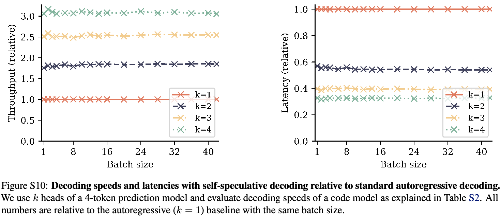
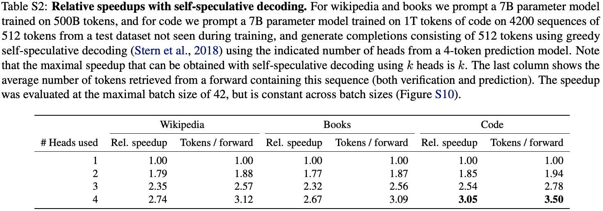
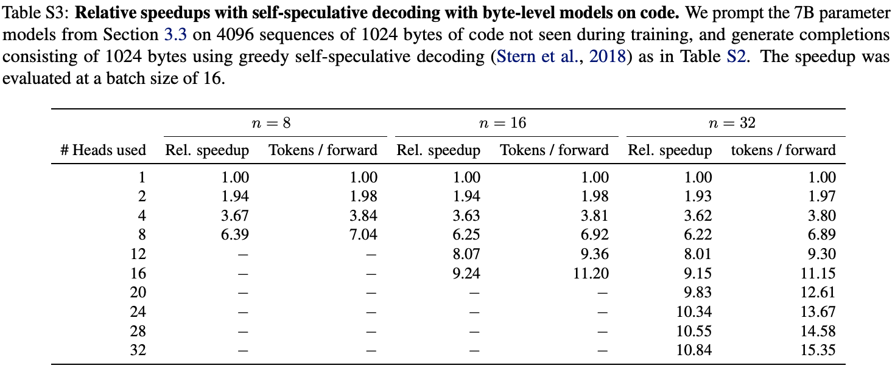
B. 其他架构
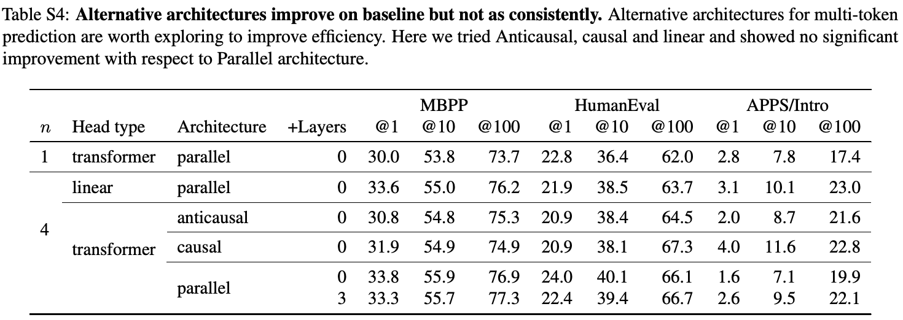
第 2 节描述的架构并非唯一合理的选择，但实验表明，它在技术上可行，且性能良好。本节介绍并比较其他架构。
复制 unembedding。将 unembedding 矩阵复制 \(n\) 次，是实现多 token 预测架构的一种简单方法。但按照第 2 节的记号，这需要形状为 \((d,nV)\) 的矩阵，对于大规模训练而言，成本高得难以承受。
线性头。除了使用单个 transformer 层作为头 \(H_i\)，也可以设想其他架构。我们尝试以没有任何非线性的单个线性层作为头，相当于对模型的残差表示 \(z\) 进行线性探测。每个头使用多个层的架构也是可行的，不过我们没有进一步探索这一方向。
因果与反因果变体。除了让预测头 \(P_i(x_{t+i}\mid z_{t:1})\) 在架构上相互独立，我们还可以让它们依赖其他头在 unembedding 之前的输出。在因果变体中，后续预测头建立在前面的头之上，即第 \(i\) 个预测头 \(P_i\) 为：
\[P_\theta(x_{t+i}\mid\cdot)=\operatorname{softmax}\circ f_u\circ f_{h_i}\circ f_{h_{i-1}}\cdots\circ f_{h_1}\circ f_s.\]在另一种反因果变体中，网络先预测最远处的 token，再逐步细化，直到紧接着的下一个 token：
\[P_\theta(x_{t+i}\mid\cdot)=\operatorname{softmax}\circ f_u\circ f_{h_i}\circ f_{h_{i+1}}\cdots\circ f_{h_n}\circ f_s.\]这些架构与第 2 节的并行架构一样，也允许依次执行前向和反向传播。图 S11 描述了这一过程。
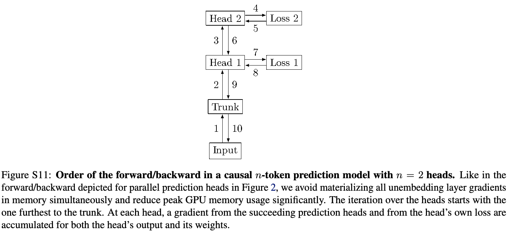
C. 训练速度
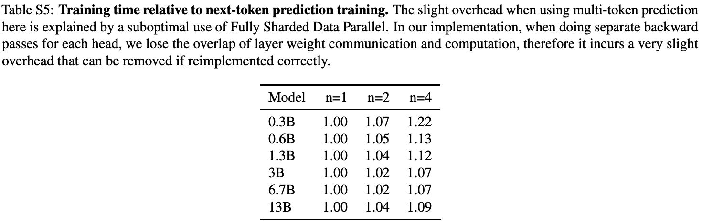
D. 微调
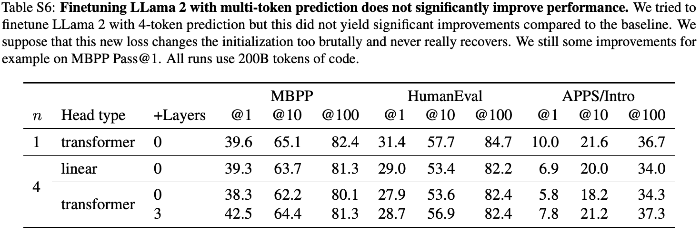
E. 模型规模扩展行为的补充结果
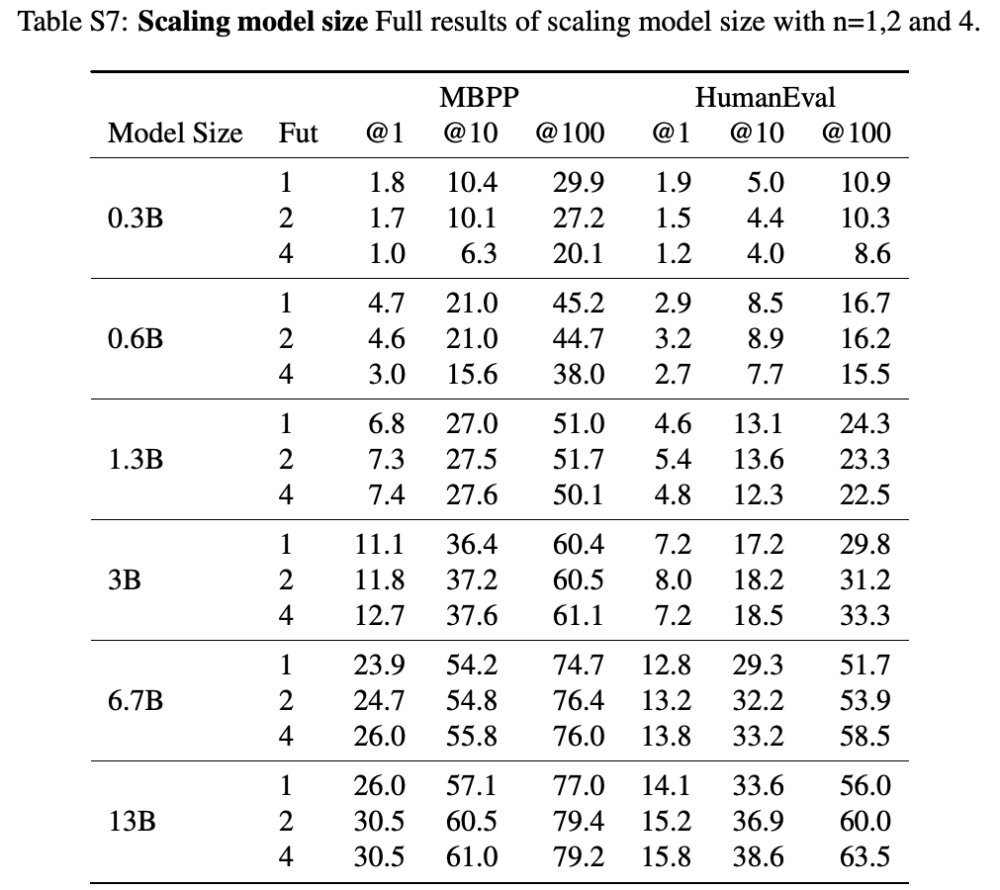
F. CodeContests 微调的细节
我们使用 CodeContests（Li et al.，2022）训练划分的 Python 子集，附带奖励标注（“正确”/“不正确”），并在评估时以正确解为条件。评估时，对于每个温度 \(T\in\{0.5,0.6,0.7,0.8,0.9\}\)，我们为测试划分中的每道题生成 1000 个样本，并对每个 \(k\) 和 \(T\) 值，计算 Chen et al.（2021）提出的 pass@k 无偏估计量。使用不同损失预训练的模型，各自的 pass@k 最优温度可能不同，因此我们计算 \(k\mapsto\max_T\operatorname{pass\_at}(k,T)\)，并在图 4 中展示。换句话说，我们允许 pass@k 使用温度 oracle。对于较小的 \(k\)，pass@k 测量理解和解决任务的能力；对于较大的 \(k\)，它还鼓励输出多样性。根据图 4 的结果，多 token 预测预训练得到的微调模型，在这两个维度上都更好。
G. 自然语言基准的补充结果
我们在标准自然语言处理基准上评估第 3.7 节的模型：ARC Challenge（Yadav et al.，2019）、COPA（Roemmele et al.，2011）、HellaSwag（Zellers et al.，2019）、Natural Questions（Kwiatkowski et al.，2019）、PIQA（Bisk et al.，2019）、SIQA（Sap et al.，2019）和 TriviaQA（Joshi et al.，2017）。
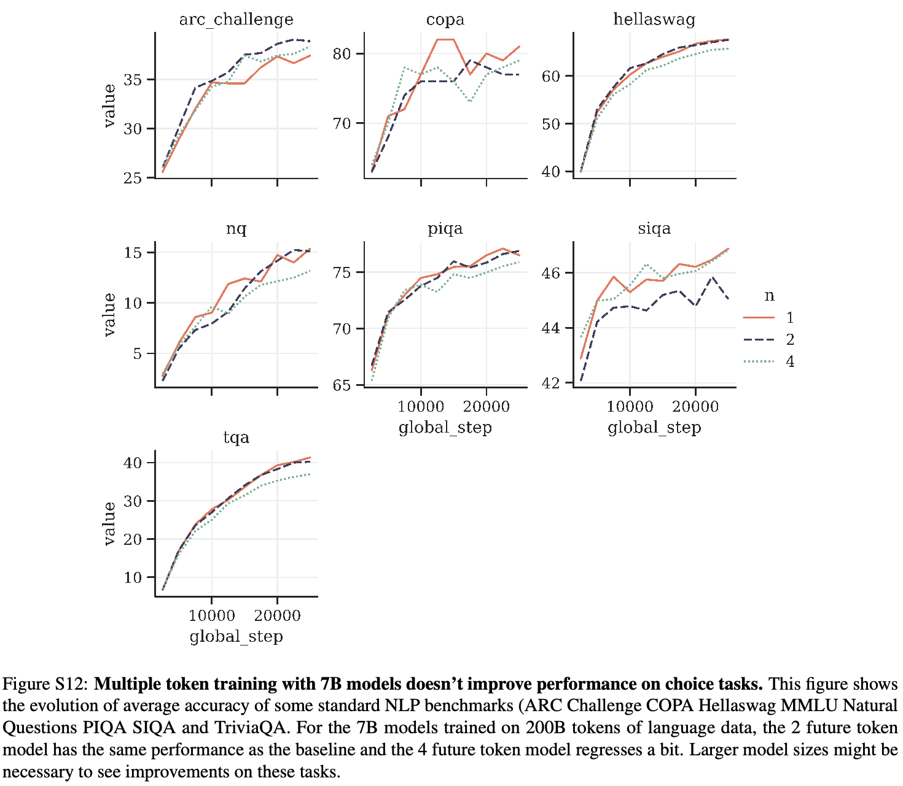
H. 生成式文本摘要的补充结果
本节报告第 3.7 节中分别使用 200B 和 500B 个自然语言 token 训练的 7B 参数模型，在摘要任务上的全面评估结果。
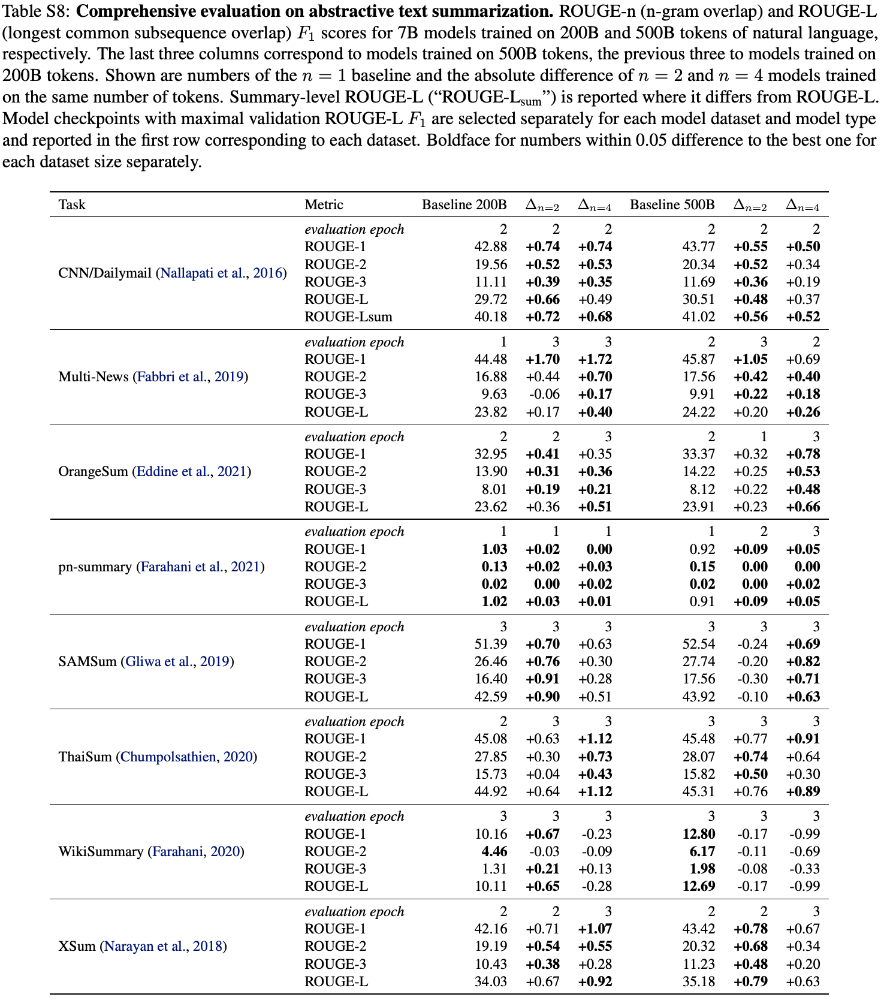
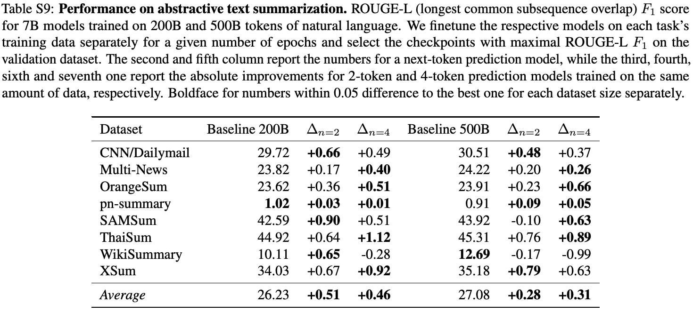
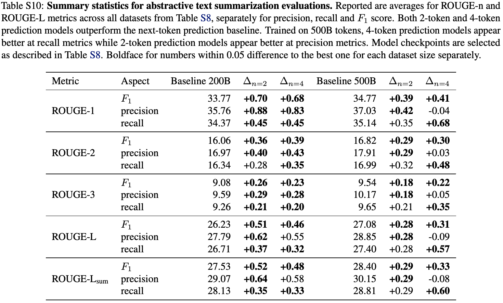
I. 自然语言数学推理的补充结果
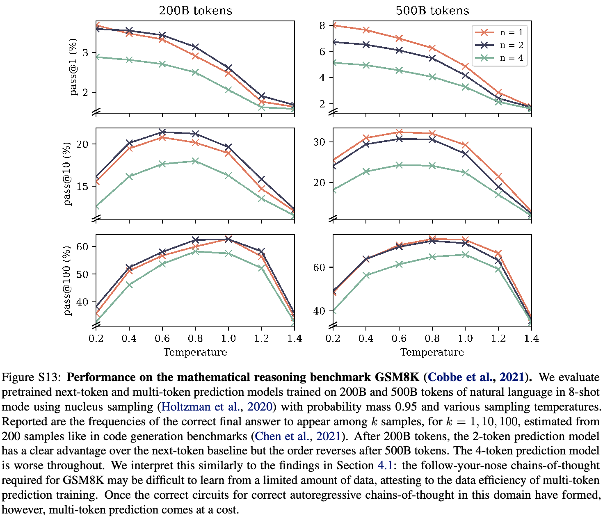
J. 归纳学习的补充结果
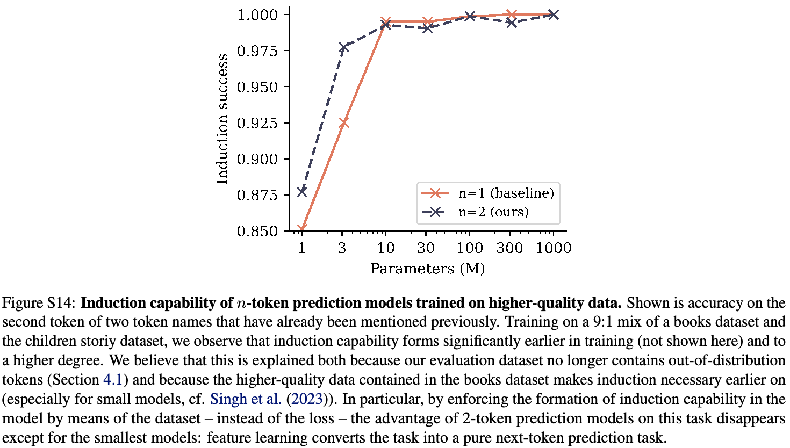
K. 算法推理的补充结果
为解释多 token 预测作为训练损失的有效性，我们研究以下计算共享假说。
自然文本中不同 token 的预测难度差异很大。有些 token 可能是某个词尚未完成的部分的后续，前文即可毫不费力地唯一确定它们；另一些则可能需要预测困难数学证明中的定理名称，或考试题的正确答案。已有研究表明，具有残差连接的语言模型会随着逐层计算不断细化输出 token 分布；也可以采用提前退出策略训练，使每个 token 位置耗费不同数量的计算资源。多 token 预测损失显式鼓励相邻 token 位置之间的信息共享，因此可以将其视为一种学习方法：让语言模型更高效地把计算资源分配给最能从中受益的 token。
为检验这一假说，我们扩展第 4.2 节的多项式算术任务，在问题和表示答案开始的 token 之间插入数量不同的 pause tokens（Goyal et al.，2023）。Pause tokens 引入了额外计算资源，可用于执行预计会对序列后续位置有用的计算；换句话说，就是开始思考答案。按照计算共享假说，多 token 预测模型更容易学会在 token 位置之间共享信息，从而共享计算，因此可能比下一 token 预测模型更善于利用这些额外计算资源。图 S15 展示了在训练和评估时均插入固定数量 pause tokens 的多项式算术任务上的评估结果。在不同任务难度和模型规模下，多 token 预测模型在这些任务变体上同样优于下一 token 预测模型。然而，我们没有看到强有力的证据表明这一差距扩大或缩小，即我们无法根据这些实验判断计算共享假说是否成立。
表 S11 报告了另一个思路相同的实验：通过在 HumanEval 和 MBPP 提示中添加空格和换行，我们以一种较为自然的方式增加“pause tokens”。根据这些结果，多 token 预测模型在利用这些额外提供的计算时略有优势，但效果很小。
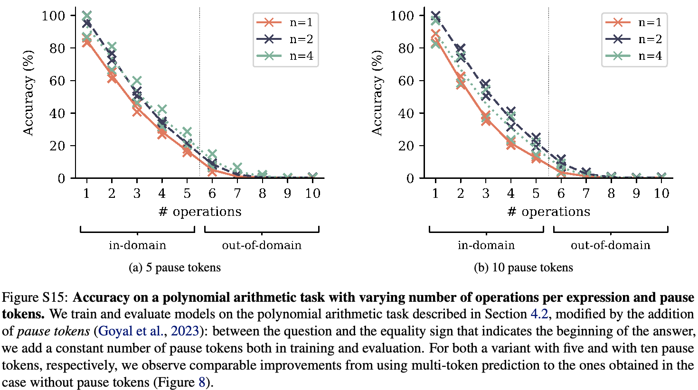
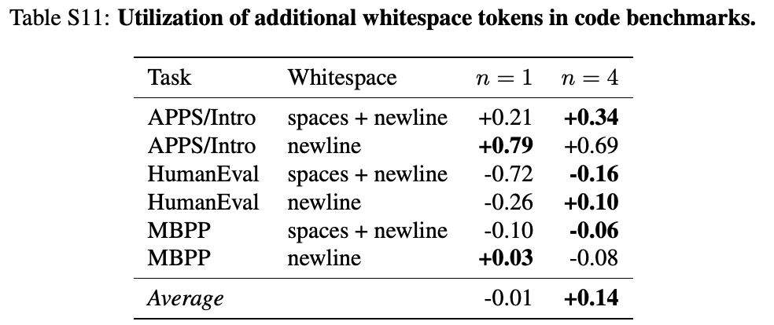
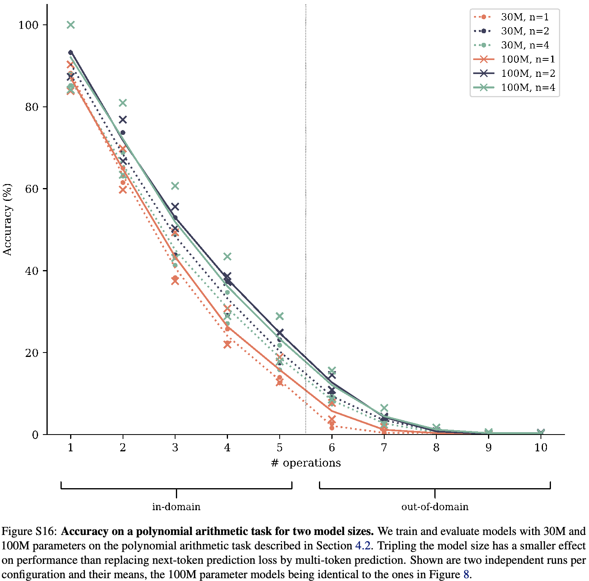
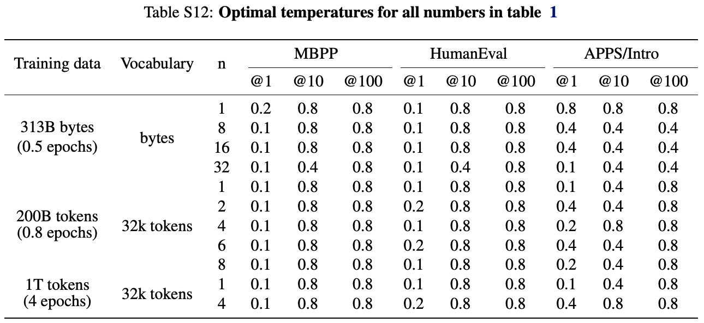
L. 关于多 token 预测的补充直觉
L.1. 与 scheduled sampling 的比较
第 5.2 节认为，多 token 预测减少了语言模型中 teacher forcing 训练与自回归评估之间的分布不匹配。Scheduled sampling（Bengio et al.，2015）是一种课程学习方法，通过逐步用模型生成的 token 替换越来越多的输入 token，同样旨在弥合序列预测任务中的这一差距。
虽然 scheduled sampling 在时间序列预测等领域有效，但我们认为，由于文本具有离散性，它不适用于语言建模。将真实输入序列替换为真实 token 与模型生成 token 交错的序列，经常会产生不符合语法、事实错误或其他不连贯的文本，必须尽力避免。此外，与多 token 预测不同，这项最初为循环神经网络开发的技术，无法轻易适配 transformer 模型等并行训练设置。
L.2. 信息论论证
我们详细解释第 5.2 节分解中出现的信息论各项，并推导一个同样能够分解多 token 预测损失的相对版本。与第 5.2 节一样，\(X\) 表示下一 token，\(Y\) 表示再下一个 token；为简化记号，省略以前文上下文 \(C\) 为条件的记法。第 5.2 节将 2-token 预测模型关注的量 \(H(X)+H(Y)\) 分解如下：
\[H(X)+H(Y)=H(X\mid Y)+2I(X;Y)+H(Y\mid X).\tag{3}\]下面解释每一项。熵项表示真实随机变量 \(X\) 和 \(Y\) 所包含的不确定性。2 \(H(Y\mid X)\) 项是给定前缀 \((C,X)\) 时的经典下一 token 熵。条件熵 \(H(X\mid Y)\) 则是一个更理论性的量，因果模型并不对其建模。它描述给定前缀 \(C\) 和后缀 \(Y\) 后，\(X\) 的不确定性，因此刻画了 \(X\) 中那些不会影响后续文本 \(Y\) 的局部变化。相反，互信息 \(I(X;Y)\) 描述了 \(X\) 所包含的关于 \(Y\) 的信息（反之亦然），因此刻画了 \(X\) 中会约束后续文本的变化。
不过，第 5.2 节的论证依赖于一个假设：多 token 预测损失具有与真实熵之和相似的分解。下面将这一论证严格化。用 \(p(x,y)\) 表示 \(X\) 与 \(Y\) 的联合分布，用 \(p(x)\)（\(p_X(x)\) 的简写）表示 \(X\) 的边缘分布，用 \(p(y)\) 表示 \(Y\) 的边缘分布。分别用 \(q(x,y)\)、\(q(x)\) 和 \(q(y)\) 表示模型预测的密度，用 \(p(x\mid y)\) 表示条件分布，用 \(D(p\parallel q)\) 表示从 \(q\) 到 \(p\) 的 Kullback–Leibler 散度，用 \(H(p,q)\) 表示从 \(q\) 到 \(p\) 的交叉熵。
定义 L.1。从 \(q\) 到 \(p\)、以 \(Y\) 为条件的 \(X\) 的条件交叉熵 \(H(p_{X\mid Y},q_{X\mid Y})\)，定义为（下页续）
2特别地，它们并非指模型的预测。
（接上页）在给定 \(y\) 条件下，分布 \(p_X\) 与 \(q_X\) 之间交叉熵关于 \(y\) 的期望，用公式表示为：
\[H(p_{X\mid Y},q_{X\mid Y})=\mathbb{E}_{y\sim p_Y}H(p_{X\mid Y=y},q_{X\mid Y=y})=\mathbb{E}_{y\sim p_Y}H(p(\cdot\mid y),q(\cdot\mid y)).\]定义 L.2。从 \(q\) 相对于 \(p\) 的 \(X\) 与 \(Y\) 的相对互信息 \(I_{p\parallel q}(X;Y)\)，定义为：
\[I_{p\parallel q}(X;Y)=D(p\parallel q_X\otimes q_Y)-D(p\parallel q).\]有 \(I_{p\parallel q}(X;Y)=H(p_X,q_X)+H(p_Y,q_Y)-H(p,q)\)；\(I_{p\parallel p}(X;Y)=I_p(X;Y)\) 退化为分布 \(p\) 下的标准互信息；\(I_{p\parallel q}(X;Y)\) 关于 \(X\) 和 \(Y\) 对称，但可以为负。
分解 \(H(X)=H(X\mid Y)+I(X;Y)\) 有以下相对版本。
引理 L.3。\(H(p_X,q_X)=H(p_{X\mid Y},q_{X\mid Y})+I_{p\parallel q}(X;Y)\)。
证明。计算如下：
\[\begin{aligned}H(p_X,q_X)&=-\sum_xp(x)\log q(x)\\&=-\sum_{x,y}p(x,y)\log q(x)\\&=-\sum_{x,y}p(x,y)\log\frac{q(x)q(y)}{p(x,y)}\frac{p(x,y)}{q(x,y)}\frac{q(x,y)}{q(y)}\\&=D(p\parallel q_X\otimes q_Y)-D(p\parallel q)-\sum_{x,y}p(y)p(x\mid y)\log q(x\mid y)\\&=I_{p\parallel q}(X;Y)+\sum_yp(y)H(p_{X\mid y},q_{Y\mid y})\\&=I_{p\parallel q}(X;Y)+H(p_{X\mid Y},q_{X\mid Y}).\end{aligned}\]对称化之后，得到所需的 \(H(X)+H(Y)=H(X\mid Y)+2I(X;Y)+H(Y\mid X)\) 的相对版本：
\[H(p_X,q_X)+H(p_Y,q_Y)=H(p_{X\mid Y},q_{X\mid Y})+2I_{p\parallel q}(X;Y)+H(p_{Y\mid X},q_{Y\mid X}).\]令 \(p\) 为训练数据的经验分布，等式左侧就是用于训练 2-token 预测模型的交叉熵损失。右侧将其分解为一个局部交叉熵项、一个权重为二的互信息项，以及一个移位的下一 token 交叉熵项。我们的解释是：通过在损失中加入 \(H(p_Y,q_Y)\) 项，2-token 预测激励模型预先计算下一步预测 \(Y\) 时会有用的特征，并增加损失中相对互信息项的权重。相对互信息究竟意味着什么？将 Kullback–Leibler 散度 \(D(p\parallel q)\) 解释为使用针对 \(q\) 而非 \(p\) 优化的编码，发送来自 \(p\) 的数据时平均需要增加的比特数，我们可以看到，最小化
\[I_{p\parallel q}(X;Y)=D(p\parallel q_X\otimes q_Y)-D(p\parallel q)\]意味着：相较于不把 \(X\) 和 \(Y\) 视为独立变量的编码，使用针对 \(q\) 优化、且把二者视为独立变量的编码发送来自 \(p\) 的数据，所需额外比特数的平均值最小。如果这一数值很小，说明 \(q\) 成功利用了 \(p\) 下 \(X\) 和 \(Y\) 的互信息。
L.3. 前瞻强化选择点
与无关紧要的决策相比，使用多头预测训练会增加损失中选择点的重要性。为论证这一点，我们提出一个简化的语言建模模型。考虑一项序列决策任务，以及在最优轨迹上采用 teacher forcing 训练的模型 \(M\)。我们区分选择点——会导致不同结果的转移——和不会导致不同结果的无关紧要的决策（图 S17(a)、(b)）。
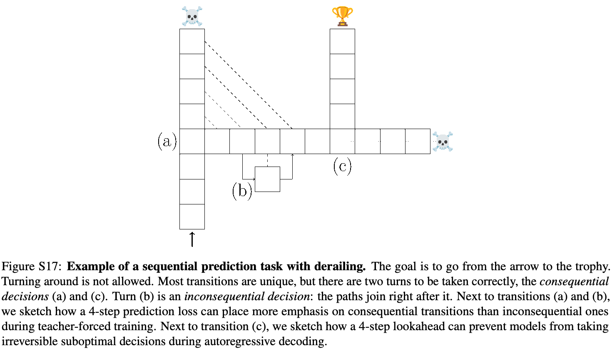
更形式化地说，假设语言模型部署于类似基于人类反馈的强化学习（Ouyang et al.，2022）的强化学习设置中：状态是提示加上截至当前已生成的部分 token 序列 \(x_{t:1}\)，动作是待生成的单个 token \(x_{t+1}\)，奖励来自外部 \(R(x_{t:1})\)。量
\[V_\pi(x_{t:1})=\mathbb{E}_{x_{t+i}\sim\pi(x_{t+i-1:1}),\,i\geq1}\left[\sum_{i\geq0}R(x_{t+i:1})\right]\]表示按照策略 \(\pi\) 行动时状态 \(x_{t:1}\) 的价值，而
\[\sigma_\pi(x_{t:1})=\sqrt{\operatorname{Var}_{x_{t+1}\sim\pi(x_{t:1})}[V_\pi(x_{t+1:1})]}\]量化了决策 \(x_{t+1}\) 对后续价值的重要性。形式上，选择点可以视为 \(\sigma_\pi(x_{t:1})\) 较大的步骤 \(t\)，而无关紧要的点则是这一数值较小的步骤。请注意，对于文本补全模型，并不存在显式奖励，我们的论证仅旨在说明这里所谓的选择点。
“偏离”指的是这样一种情况：推理时，模型 \(M\) 自回归生成轨迹，在某个选择点犯错后导致糟糕的结果。即使之后 \(M\) 在这个选择既定的条件下采取最优行动，最终结果仍可能显著差于最优轨迹的结果。
仍在 teacher forcing 设置下，我们问：对于这一任务，用 \(n\) 步预测而非下一步预测训练 \(M\)，会有什么影响？设 \(x_t\to x_{t+1}\) 是最优轨迹上的一个选择点，次优选择是 \(x_t\to\tilde{x}_{t+1}\)（图 S17(a)）。假定 \(x_t\) 之前以及 \(x_{t+1}\)、\(\tilde{x}_{t+1}\) 之后的轨迹都由无关紧要的转移组成，后者记作 \(\tilde{x}_{t+j}\to\tilde{x}_{t+j+1}\)。我们将比较采用 teacher forcing 的下一步预测模型与 \(n\) 步预测模型，在部分轨迹 \((x_{t-n+1},\ldots,x_t)\) 上的损失。下一步预测模型的预测为 \((x_{t-n+2},\ldots,x_t,\tilde{x}_{t+1})\)，只有一个错误预测。对于 \(n\) 步预测模型，在时刻 \(t-n+i\)、\(i=1,\ldots,n\) 的预测为 \((x_{t-n+i+1},\ldots,x_t,\tilde{x}_{t+1},\ldots,\tilde{x}_{t+i})\)，含 \(i\) 个错误预测。换句话说，\(n\) 步预测模型收到与此选择点及其后果相关的 \(1+\cdots+n=\frac{n(n+1)}2\) 个损失项，而每个无关紧要的转移（图 S17(b)）受到强化的次数，仅为下一步预测模型中的 \(n\) 倍。也就是说，相较于下一步预测模型，选择点在 \(n\) 步预测模型损失中的重要性，平均提高到 \(\frac{n+1}2\) 倍。
如第 5.1 节所述，我们认为，这一模型捕捉到了语言模型训练与推理的重要特征：选择点是生成文本中具有重要语义意义的转折点，例如问题的最终答案或某一行具体代码，而无关紧要的决策可以是在同义词之间或代码变量名之间作选择。
除了训练动态这一视角，我们还假设，\(n\) 步预测也使专门检测前后步骤预测之间不一致的电路得以形成。例如，若在模型较早的一层，就能够预测决策 \(x_t\to\tilde{x}_{t+1}\) 会导致次优结果 \(\tilde{x}_{t+n}\)（图 S17(c)），后续层就能在模型的下一步预测中降低 \(x_t\to\tilde{x}_{t+1}\) 的概率。在容量充足的条件下，下一步预测模型也会出现这种行为；但第 4.2 节的实验说明，在多步架构中，这类电路更容易形成，因为该架构强制要求模型在预测 \(\tilde{x}_{t+1}\) 时，能够获取所需信息 \(\tilde{x}_{t+n}\)。我们认为，这种情况在自然语言与代码建模中经常出现，例如对问题的初步回答，与之后为了证明该回答而提出的 chain-of-thought 的结果相矛盾。
更一般地说，只要对于某个 \(1<i\leq n\)，先预测 \(\tilde{x}_{n+i}\)，再根据它预测 \(\tilde{x}_{n+1}\)，比直接预测 \(\tilde{x}_{n+1}\) 更容易，就会出现这种情况。下一节讨论这种分解顺序现象，并给出自然语言建模中经常出现的一个具体实例。
L.4. 分解顺序
因果语言建模通常将文本序列 \(x_t\cdots x_1\) 的概率分解为：
\[P(x_t\cdots x_1)=\prod_{i=1}^tP(x_i\mid x_{i-1}\cdots x_1).\]虽然按时间向前推进无疑是最自然的分解顺序，但有些情况下它并非最优。例如，在屈折语中，相关句子成分之间的一致关系非常常见，其中一个词决定其他词的语法形式。考虑以下德语句子：
Wie konnten auch Worte meiner durstenden Seele genügen?3
Friedrich Hölderlin，《许珀里翁片段》（1793）
其中，“genügen”要求一个与格宾语，而“Seele”又要求物主代词“mein”采用阴性单数与格形式“meiner”；分词“durstend”位于“meiner”之后，因此需要采用弱变化的阴性单数与格形式“durstenden”。换句话说，以下分解顺序
Wie konnten auch Worte → genügen → Seele → meiner → durstenden?
可以说是一种更容易构建上述句子的顺序。因此，无论人类还是语言模型，都必须在潜在激活中执行这种分解——它偏离了实际预测采用的因果顺序！4-token 预测损失让这一过程更容易，因为它明确鼓励模型在潜在表示中保留后续 4 个 token 的全部信息。
3大意为：言语怎能满足我饥渴的灵魂？
M. 训练超参数
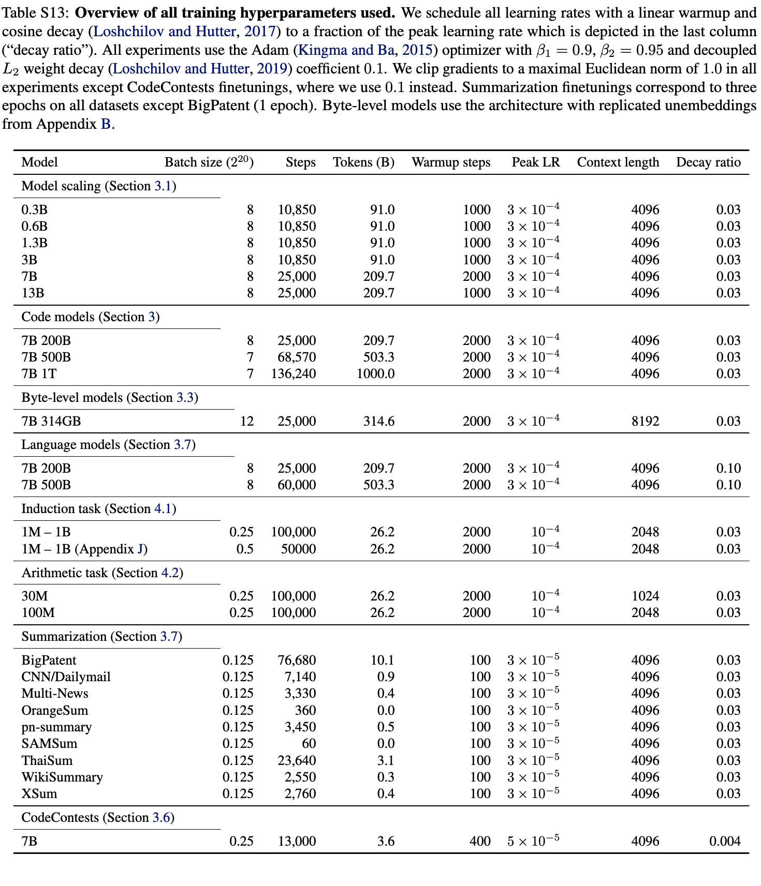
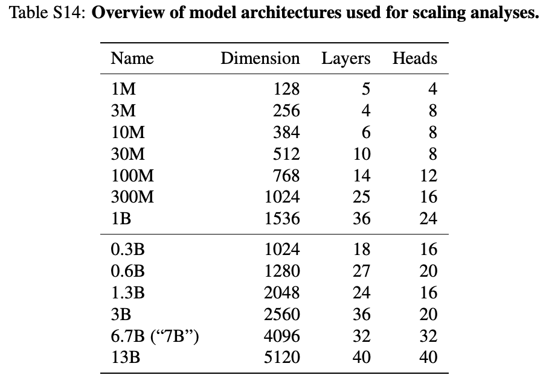